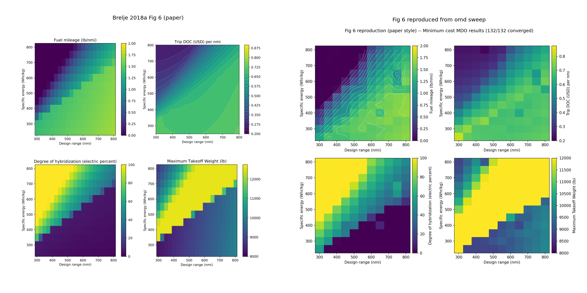
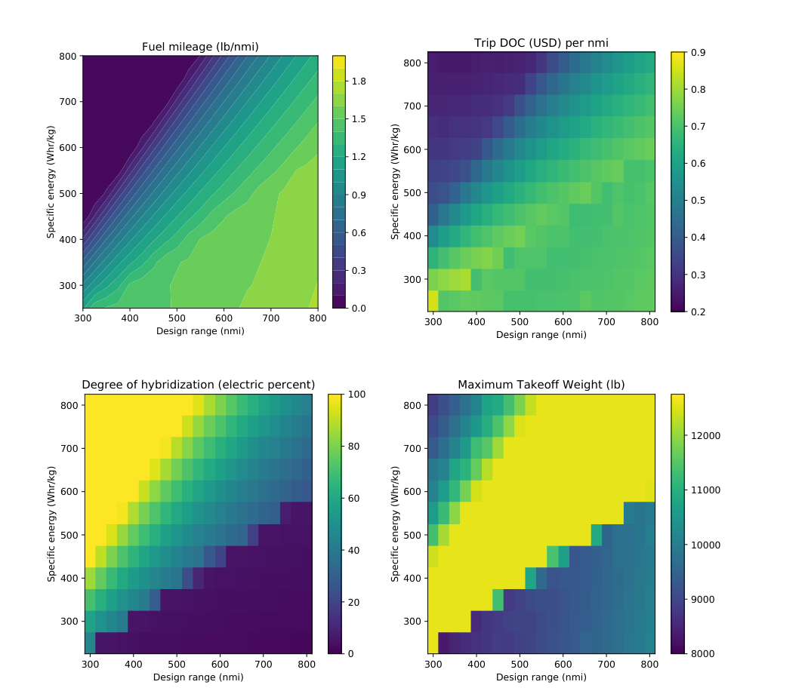
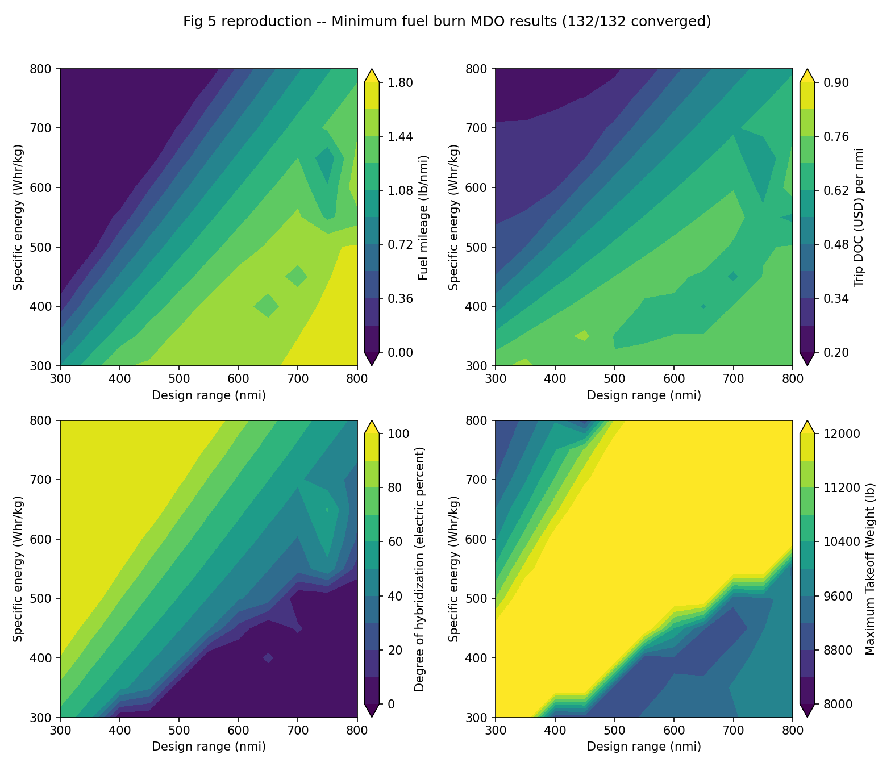
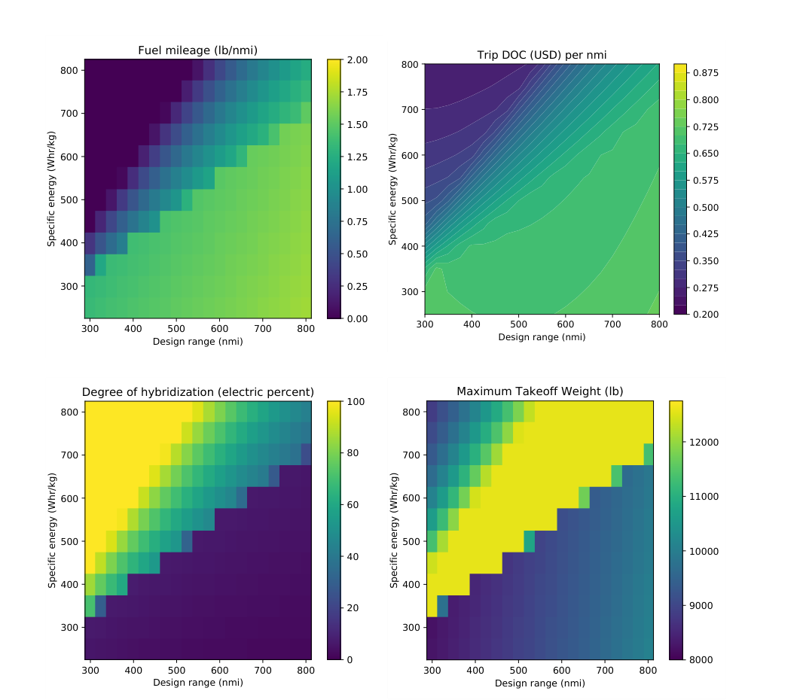
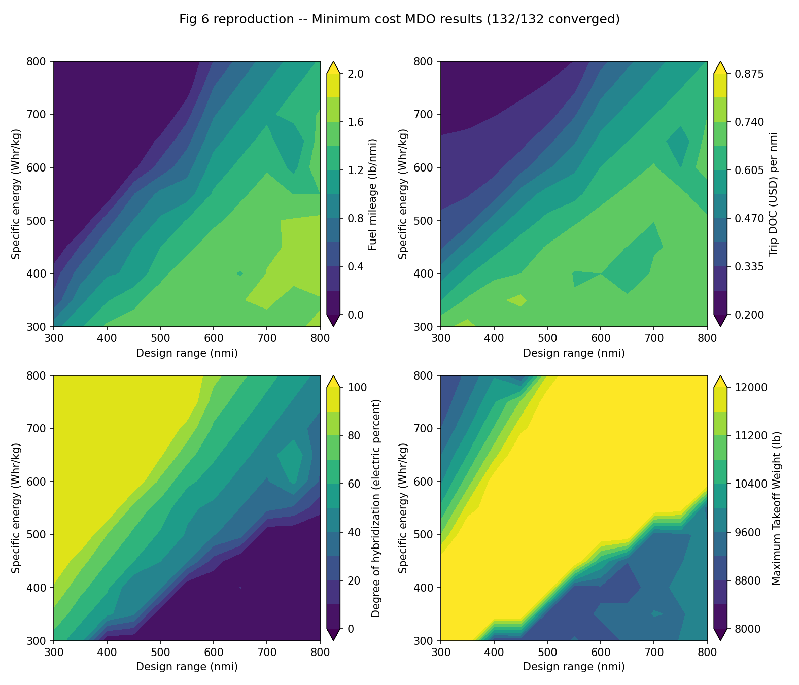

headline result

Paper vs reproduced.
Figure 5 (fuel + MTOW/100 objective) contours over mission range and battery specific energy. Paper on the left, omd-run reproduction on the right.
fig 5 · fuel + MTOW/100 · 5x5 grid · paper (left) vs omd Lane B (right). Coarse grid blurs the hybrid/electric boundary but preserves all trends: fuel-heavy designs dominate at low spec energy; battery-heavy dominate at high spec energy; transition is roughly diagonal.
Figure 6 (trip direct operating cost objective). Cost MDO has competing local minima; each cell is warm-started from the fuel-optimized design at the same grid point.

fig 6 · direct operating cost · 5x5 grid · warm-started from fig 5 optimum per cell. MTOW pins at the 5700 kg upper bound across the middle and lower-right region, matching the paper.
individual panels
Each figure on its own for closer inspection. All cropped consistently between paper and reproduction.

paperfig 5 · Brelje 2018a, AIAA 2018-4979

reproducedfig 5 · omd Lane B, 5x5 grid

paperfig 6 · Brelje 2018a, DOC objective

reproducedfig 6 · omd Lane B, warm-start from fig 5